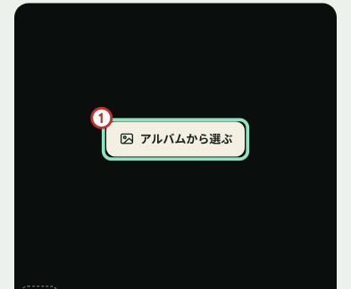
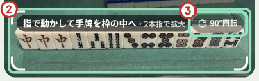
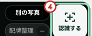
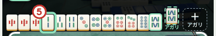
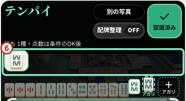
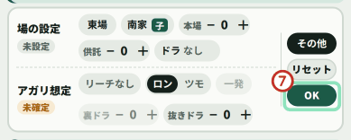
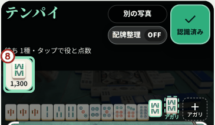
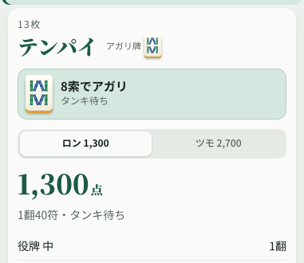

使い方
手牌を写真に撮るだけで、シャンテン数・待ち牌・点数が出ます。写真は端末の外に送られません。
写真から読み取る（7ステップ）
1アルバムから写真を選ぶ
上のタブで「写真」を選ぶと、アルバムが開きます。手牌が横一列に写っている写真を選んでください。

2手牌を枠の中に入れる
写真を指でドラッグして動かし、2本指で広げると拡大できます。手牌の列が枠いっぱいに入るように合わせてください。

牌が小さく写っていると読み間違えます。手牌が枠の横幅いっぱいになるくらいが目安です。
3「認識する」を押す
1〜2秒で読み取りが終わります。通信はしません。機内モードでも動きます。

4読み取りを確かめる
読み取った牌が並びます。違う牌があればその牌をタップすると選び直せます。読み取れなかった牌は「？」になります。

5待ち牌を見る
13枚そろうと、テンパイかどうかと待ち牌が出ます。テンパイでなければシャンテン数と「何を引けばテンパイか」が出ます。

6条件を入れて「OK」を押す
点数を出すには、場風・自分の家・リーチの有無・ドラなどを入れます。上の「条件/ルール 設定」の＋を押すと開きます。

7点数が出る
待ち牌の下に点数が出ます。牌をタップすると、役・符・面子の分け方まで下の枠に出ます。


ホーム画面に置いて使う
ブラウザで開くよりも、ホーム画面に置いたほうが速くて便利です。一度置いておけば、電波が届かない場所でも使えます。
- Safari でこのサイトを開く
- 下（または上）の共有ボタンを押す
- 「ホーム画面に追加」を選ぶ
アイコンから開くと、ブラウザのバーが消えて全画面になります。Android の Chrome では「アプリをインストール」と出ます。
うまく読み取れないとき
| 症状 | 試すこと |
|---|---|
| 枚数が合わない | 手牌の列が枠いっぱいに入るまで拡大してください。牌が小さいと区切りを間違えます。 |
| 牌を読み違える | その牌をタップして選び直してください。候補が3つ出ます。 |
| 「手牌が見つかりません」と出る | 手牌が横一列に並んで写っているか確認してください。斜めから撮った写真や、牌が重なっている写真は読めません。 |
| 暗くてうまくいかない | 手元の影が牌にかからないように撮り直すと読みやすくなります。 |
| 縦向きの写真 | 枠の右上の「90°回転」で横向きにしてください。 |
三人麻雀で使う
見出しの横の「三人麻雀」を押すと切り替わります。2〜8萬と赤5萬は使えない牌として扱い、チーも入力できなくなります。抜きドラ（北）の枚数も入れられます。
三人麻雀の設定のまま2〜8萬を読み取ると、設定の間違いをお知らせします。
鳴いているとき
手牌が10枚・7枚・4枚で読み取れたときは、鳴きの入力に案内します。チー・ポン・明カン・アンカンを選んで、鳴いた牌をタップしてください。鳴きを入れないと待ちは出ますが、点数は出せません。
写真はどこにも送られません
読み取りはすべて端末の中で行います。写真も手牌も、外部のサーバーに送られることはありません。通信していないので、電波が悪い雀荘でも同じ速さで動きます。くわしくはプライバシーポリシーをご覧ください。
アプリを開く